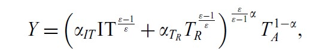
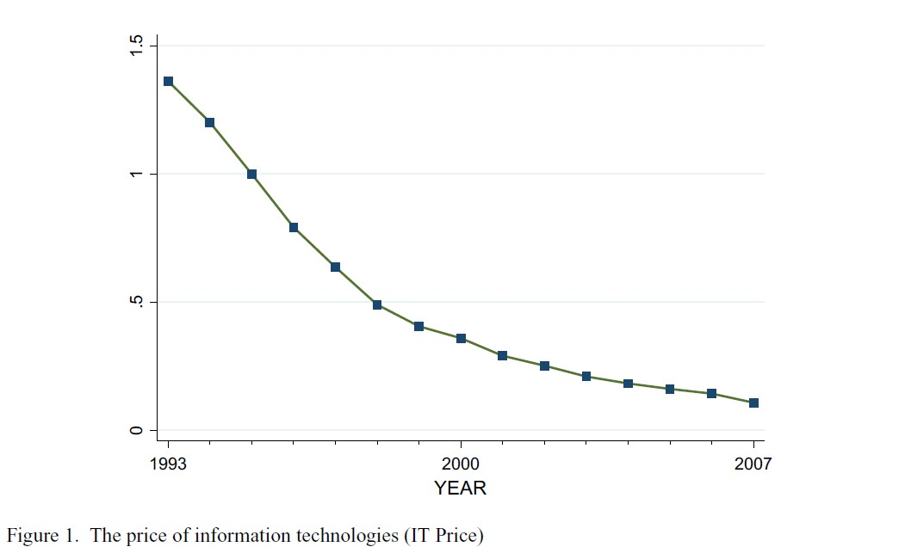
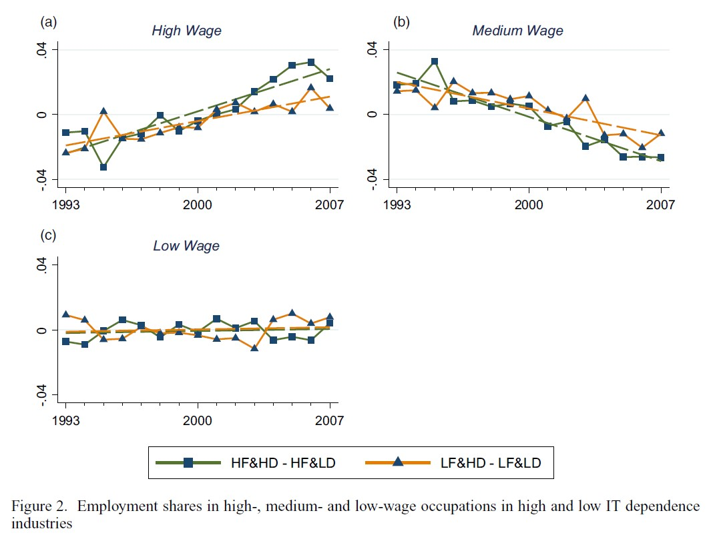
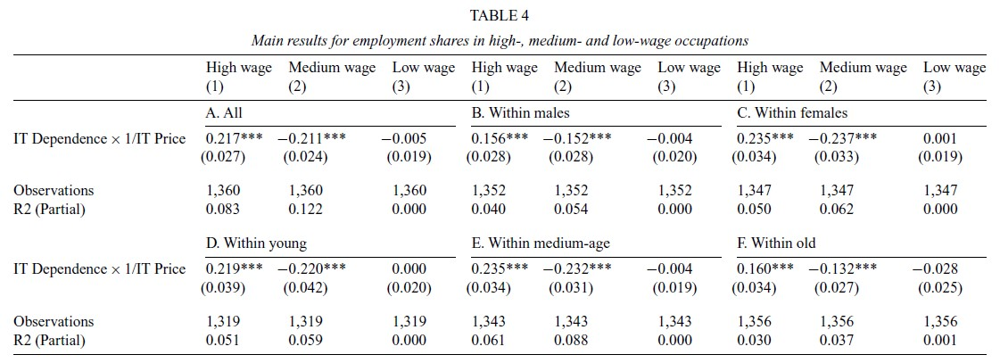

Automation and Job Polarization: On the Decline of Middling Occupations in Europe
Skill-biased technological change alone cannot explain a prominent and relatively recent phenomenon: It seems medium-wage occupations are declining compared to high and low- wage occupations. Goos and Manning (2007) call this occurrence ‘job polarization’. The main interpretation put forward for such job polarization is because of rapid technological advancement such as computers. This technology substitutes routine tasks and is complementary to abstract tasks that require a more creative thinking approach. Leading Jerbashian to ask if the fall in price of IT has somehow influenced the demand for low, medium- and high-wage occupations more or less in environments that are either more or less dependent on IT. Furthermore, gender and age groups will also be accounted for and explored for any discrepancies when it comes to this notion of job polarization.
Theoretical Background
Knowing the rapid advancement in IT and its subsequent decreasing in prices of such IT, this would have to reduce the demand for routine tasks more in those environments that depend more in IT. However, the demand does increase for abstract tasks in industries that do depend more on IT. Such conjecture is shown in the model below.

The variable that adequately shows the dependence of IT is αIT. The more technologically dependent countries are on IT, the higher αIT will tend to be. This model also portrays how abstract tasks inherit IT in a more harmonious way than routine tasks do. This is the case when ε > 1, showing the elasticity of substitution amid IT and non-abstract tasks.
Empirical Metholodolgy and Data
Jerbashian uses 10 Western European countries between the years 1993 and 2007 as part of his data analytics. For his variables gender and age, Jerbashian had the ELFS (EU Labour Force Survey) database at his disposal. Keeping in mind the nature of bureaucratic institutions, Jerbashian also uses a lot of US data due to the inherent nature of the country’s lack in government intervention. This alleviates more data to be collected and accessed. This brings us to Figure 1, depicting the price of IT between 1993-2007.

One can deduct the obvious trend that is happening here, namely the price of information technologies has been steadily decreasing due to the rapid advancement in technology itself. Think about our phones or data storage systems that were the size of fridges containing only a handful of Megabytes while costing aplenty. Nowadays, one can have access to a Terabyte of storage on a mini-SD card and this would cost you pennies comparatively.

These three graphs perfectly conceptualize/visualise what we have said in words. There are four sets one can derive from these graphs.
Those countries with a high fall in price with a high dependence IT → HF&HD. Countries with a high fall in price but a low dependence on IT → HF&LD.
Countries with a low fall in prices and high dependence → LF&HD. Lastly, countries with a low fall in prices and a low dependence → LF&LD.
Since we now know that IT prices have been falling in the period 1993-2007, one can look at the high wage graph in Figure 2 and notice the employment share increasing and having more impact on industries that are heavily dependent on using IT (HF&HD). Intuitively this makes sense since one now requires more people with abstract-thinking skills in those industries.
When we look at medium wage, it is noticeably a decreasing trend because of the slow obsoleteness of routine-cognitive tasks that are being replaced by this rapid technological advancement and subsequent falling in prices of IT. For the low wage trend, Jerbashian stated that occupations at the low-wage level are not directly prompted by this fall in IT prices. Thus, creating a sense of stagnation for the low-wage professions.
Results
If we take into account the estimation results for the employment shares in the table below, there will be the understanding that because of the high fall in prices of IT that this coincides with a larger demand for exactly those high-wage jobs that require a lot more critical/creative thinking. All of this in industries that especially rely on to those that are independent towards IT-use.

Taking gender and age into consideration gives us some notable results. Most of the groups fall in line with Panel A, however it seems the effect of the fall in IT prices has decreased the share of employment for medium-wage jobs significantly more among women than men. On top of that, a higher increase in the employment share of high-wage professions among women than men.
As Jerbashian so eloquently puts it, this is due to the brawn of men and their biological ineptitude making them more fit for medium-wage jobs than females that have a wider emotional spectrum which complements abstract tasks fairly well (high-wage jobs).
Conclusion
To understand the general gist of Jerbashian’s research, the table and the figure with the three graphs will give one the adequate amount of information to comprehend the main points that Jerbashian tried to get across. Starting with the undeniable fact that IT prices have fallen throughout the years mainly because of the rapid technological advancement. Leading to an increasing share of employment in high-wage jobs in industries that heavily rely on IT. This is not the case for medium-wage jobs (mostly routine tasks), because technology replacing to a certain extent these exact jobs that do not require any amount creative/ abstract thinking. Low-wage jobs are not influence directly by such a fall in IT prices. Lastly, contingent on age and gender, there tends to be a relative advantage associated with tasks dependent on it being high-wage jobs or medium-wage jobs
Photo from: Unsplash
Original Article: Jerbashian V. (2019): ”Automation and Job Polarization: On the Decline of Middling Occupations in Europe”, Oxford Bulletin of Economics and Statistics, 81, 5 pp. 1095-1116